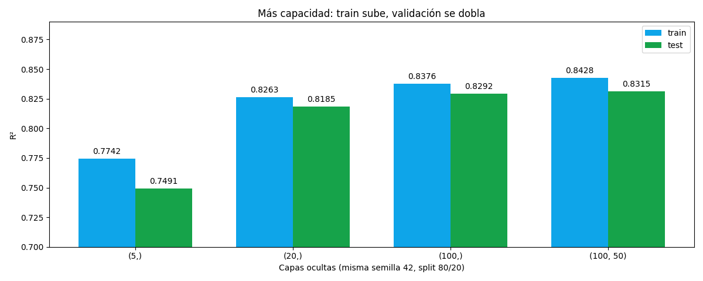

Bloque H · RNA en el análisis de datos · Lección 0054 · mar 1 dic
Arquitecturas y criterios: cuándo la red, cuándo otra cosa
Win de hoy: más neuronas = más capacidad (de (5,) a (100,50) el R² train sube 0,77 → 0,84 mientras el test se estanca en 0,83): esa brecha es el sobreajuste naciendo. Mapa de arquitecturas + tabla de criterios para elegir MLP, lineal o bosques sin adivinar.
1 · De MLP chico a red profunda: el mapa de arquitecturas
El MLP de la lección 0053 era 2 → 20 → 1. Si agregás neuronas o capas llegás a una red profunda, y con ella crece su capacidad: qué tan complicadas pueden ser las curvas que aprende. Cuántas capas, cuántas neuronas, qué activación: todo eso son hiperparámetros (los elegís vos; los pesos los aprende la red). Mapa de las arquitecturas más usadas, una línea cada una:
| Arquitectura | Idea en una línea | Dato típico |
|---|---|---|
| MLP | Capas densas: cada neurona ve todo lo anterior (la de 0053) | Tabular (Toyota) |
| CNN | Filtros que barren buscando patrones locales (bordes, texturas) | Imágenes |
| RNN / LSTM | Conexiones que miran atrás: memoria de lo que vino antes | Secuencias, texto |
| Autoencoders | Comprimen y reconstruyen: lo que no reconstruye bien es raro | Compresión, anomalías |
Línea honesta: en este curso solo corre el MLP (tabular Toyota, sklearn en stack); CNN, RNN y autoencoders quedan como mapa — saber que existen y para qué dato sirve cada una (§2–§3 vuelven al MLP con números).
2 · Overfitting con números: la brecha que se abre
Mismo MLP de 0053 (mismo split 80/20, semilla 42, mismos Xs), cambiando solo la capacidad. Train sube siempre; test sube al principio y después se estanca (+0,069, +0,011, +0,002): la red gigante compra 0,002 de test con cien veces más parámetros. Esa divergencia es la firma del overfitting (sobreajuste). Su espejo, red tan chica que ni train aprende, es el underfitting (subajuste).
| Capas ocultas | R² train | R² test | Lectura |
|---|---|---|---|
| (5,) | 0,7742 | 0,7491 | Chica: aprende poco (casi subajuste) |
| (20,) | 0,8263 | 0,8185 | La de 0053: punto dulce |
| (100,) | 0,8376 | 0,8292 | Más train, test casi igual |
| (100, 50) | 0,8428 | 0,8315 | Gigante: +0,002 de test, sobreajuste naciendo |
Ojo honesto: acá el test no cae porque los defaults nos cuidan — alpha=0.0001 ya regulariza
y adam frena solo por tolerancia (la (100,50) frenó a las 85 de 2000 iters). Los remedios formales en sklearn son
tres: 1) subir alpha (regularización L2, la misma idea del ridge de la
lección 0021); 2) early_stopping=True
(frena cuando un 10% reservado deja de mejorar: la (100,50) frenó a las 41 iters con R² 0,84/0,83, casi idéntico
gastando la mitad); 3) menos neuronas (volver a la (20,) del punto dulce).
3 · Criterios de uso: MLP vs lineal vs árboles/bosques
El corazón de hoy: con el mismo Toyota pasaron el lineal (0003), los árboles y bosques (0035/0036) y ahora el MLP. ¿Cuándo cada uno?
| Criterio | Lineal (0003) | Árboles / bosques (0035/0036) | MLP (0053) |
|---|---|---|---|
| n chico | Gana: pocos parámetros, estable | Bien (bosques estabilizan) | Pierde: se come el ruido |
| No-linealidad | Pierde: solo rectas | Bien: cortes por tramos | Gana: curvas suaves |
| Interpretabilidad | Total: un β por variable | Media: importancias | Nula: caja negra |
| Costo de tuning | Cero: corre y listo | Bajo: profundidad y listo | Alto: capas, alpha, escala |
| Escala obligatoria | No | No | Sí (0053 §3 o explota) |
Cierre: no hay campeón, hay herramienta para cada dato — el eco del §2 de la lección 0051, ahora con la fila RNA completa. Pocos datos y explicar por qué → lineal; tabular ruidoso sin tuning → bosques; curva suave con datos de sobra → MLP.
4 · Figura: capacidad vs overfitting

Regenerar la figura (mismo resultado versionado en assets/img/toyota/):
python3 scripts/make_figures.py --only arquitecturas-criterios-cierre5 · Quiz (auto-chequeo inmediato)
6 · Fuente primaria y cierre del Bloque H (y del curso)
Para profundizar (1 fuente + 1 secundaria): Géron, Hands-On Machine Learning — caps. de redes neuronales y arquitecturas (lectura conceptual: el código del curso sigue en sklearn). Secundaria: Hastie, Tibshirani & Friedman, The Elements of Statistical Learning — cap. 11 (redes neuronales). Más contexto en RESOURCES.
Cierre Bloque H (25 nov–1 dic): neurona (0053) → MLP sobre Toyota (0053) → arquitecturas + criterios (hoy). Cierre del curso enseñado: del Bloque A (presentación y stack) al Bloque H (RNA), pasando por limpieza, visualización, missingness, selección, regresión, clustering, clasificación, inferencia, muestreo y reglas. Parcial mié 2 dic (sin lección, regla general).